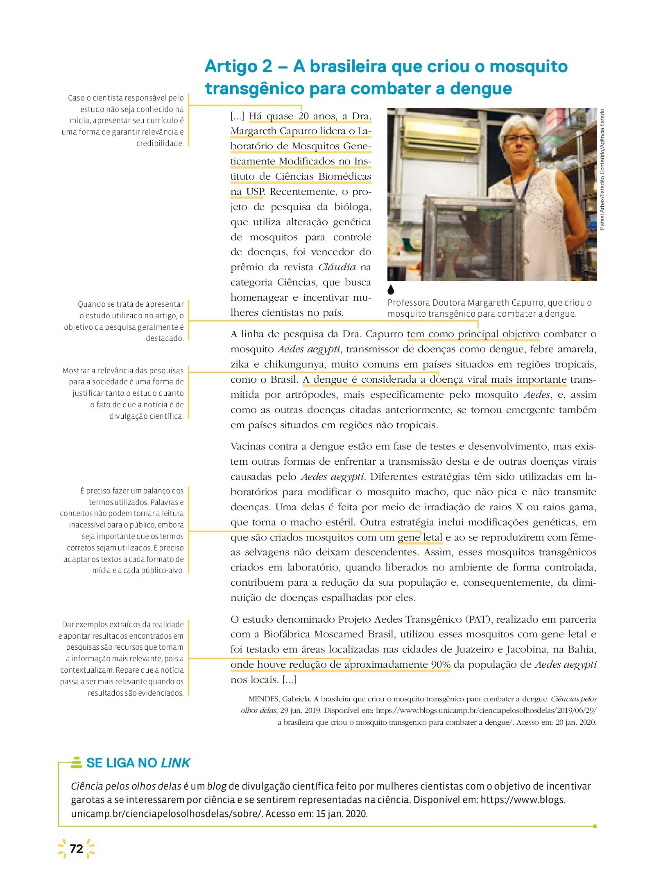

Os Transgênicos
Assista os seguintes vídeos sobre a temática da aula.
Vídeo 1
Vídeo 2
Vídeo 3
Leia o seguinte texto: O que são os Transgênicos?
O transgênico é um organismo que recebe um gene retirado de outro, o que lhe confere uma característica nova.
A depender do gene adicionado, a planta pode se tornar mais nutritiva ou mais resistente à seca, a pragas ou a agrotóxicos.
Os defensores dos alimentos transgênicos dizem que, há mais de 70 anos, pesquisadores usam diferentes técnicas com o objetivo de promover melhoramentos genéticos. Batata, milho e trigo já possuem genes originais de outras espécies.
— O homem modificou os alimentos por cruzamentos, seleções e mutagênese, entre outros processos que alteram o DNA, o material genético das plantas e suas características originais — observa Eduardo Romano, pesquisador da Empresa Brasileira de Pesquisa Agropecuária (Embrapa).
O que aconteceu de mais novo na área foi o surgimento da técnica do DNA recombinante, nos anos 70, que abriu novas fronteiras para as pesquisas. A inovadora técnica permite que um gene seja isolado para ser colocado em outra espécie, sem a necessidade de compatibilidade sexual.
Entre os argumentos mais usados a favor da transgenia, está o de que essas técnicas permitirão ampliar a oferta de produtos agrícolas para atender à necessidade de alimentos da crescente população mundial.
Os críticos reagem com a frequente menção de potenciais riscos no médio e no longo prazo dessas culturas para a saúde humana (como o de aumento de alergias e da resistência a antibióticos) e para o meio ambiente (como o uso de substâncias tóxicas e radiação).
— Recentes estudos, feitos inclusive na Comunidade Europeia, não descartam riscos na produção e consumo de transgênicos — afirma o advogado Maurício Guetta, do Instituto Socioambiental (ISA).
De acordo com Romano, não existe motivo real para qualquer receio. Ele salienta que essa é a posição oficial da Organização Mundial da Saúde (OMS) e da Autoridade Europeia para a Segurança dos Alimentos.
— Com relação aos organismos transgênicos, existe uma regulação muito forte, inclusive no Brasil. Usando o conhecimento científico atual, os estudos apontam que não existem riscos maiores nos produtos transgênicos em comparação com os não transgênicos — afirma o pesquisador.
Fonte: Agência Senado
Exercícios de Fixação
01. O que é um organismo transgênico?
02. Quais os argumentos utilizados para defender os alimentos transgênicos?
03. O que argumentam os críticos aos alimentos transgênicos?
04. Na sua opinião, qual a importância de se ter um símbolo nos alimentos identificando-os como transgênicos? Justifique sua resposta.
Leia o texto abaixo e responda as quetões 05, 06 e 07

05. Qual o objetivo principal da linha de pesquisa da doutora Capurro?
06. Segundo o texto como ocorre o combate ao Aedes aegypti pela estratégia da modificação genética?
07. O que ocorreu nas cidades de Juazeiro e Jacobina, quando foram utilizados mosquitos Aedes aegypti modificados geneticamente?